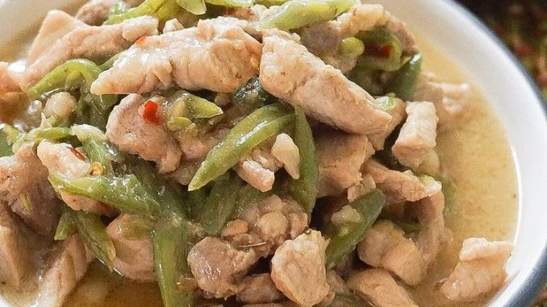

Bicol Express

What is Bicol Express?
Bicol Express is a popular Filipino dish which was popularized in the district of Malate, Manila
but made in traditional Bicolano style. It is a stew made from long chili peppers (siling haba in
Tagalog) or small chili peppers (siling labuyo in Tagalog), coconut milk/coconut cream (kakang gata in Tagalog),
shrimp paste (bagoong alamang in Tagalog) or stockfish, onion, pork, ginger and garlic
Ingredients
- 1 tablespoon canola oil
- 1 onion, peeled and sliced thinly
- 4 cloves garlic, peeled and minced
- 2 pounds pork belly, cut into 1-inch cubes
- 2 tablespoons fresh shrimp paste
- 1 can (13.5 ounces) coconut milk
- 1 cup water
- 14 pieces Thai chili peppers, stemmed and minced
- 2 cups finger chilies (siling haba), sliced
- 1 cup coconut cream
- salt and pepper to taste
Instructions
- In a wide pot over medium heat, heat oil.
- Add onions and garlic and cook, stirring occasionally, until softened.
- Add pork and cook, stirring occasionally, until lightly browned.
- Add shrimp paste and cook, stirring occasionally, for about 1 to 2 minutes.
- Add coconut milk, water, and chili peppers. Bring to a simmer and cook for
about 35 to 35 minutes or until pork is tender and liquid is reduced and
begins to render fat.
- Add finger chilies and cook, stirring regularly, for about 1 to 2 minutes.
- Add coconut cream and continue to simmer until thickened and begins to render fat.
- Season with salt and pepper to taste. Serve hot.
Return to Homepage